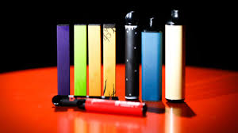

USO DE CIGARROS ELETRÔNICOS NA ADOLESCÊNCIA
Introdução
O uso dos cigarros eletrônicos, conhecido como vape ou pods, está sendo uma febre entre os adolescentes e alguns adultos. Os cigarros eletrônicos podem causar o surgimento de câncer, doenças respiratórias e cardiovasculares, como infarto, morte súbita, hipertensão arterial além do envelhecimento precoce, falta de ar e cansaço. Há, ainda, a possibilidade de contrair a doença pulmonar chamada Evali, sigla em inglês para lesão pulmonar associada ao uso de produtos de cigarro eletrônico. Além dos riscos à saúde física, o uso de cigarros eletrônicos também está ligado a muitos outros problemas. Entre eles está o vício da nicotina, impacto no desenvolvimento cerebral, maior probabilidade do uso de tabagismo no futuro além do impacto na saúde mental que pode aumentar o estresse e a ansiedade. Segundo o IBGE(2009), os jovens fumantes de 17 anos a 19 anos estavam fumando em média de 17 a 24 cigarros por dia. Com esses dados, percebemos que há uma alta chance de um início do vício antes das idades citadas, podendo ser até mesmo no início da adolescência, que é a faixa etária onde normalmente as pessoas se posicionam em relação à sociedade.
Autores: Artur G. Rech, Gabriel de D. de Camargo, Gabriel M. Garstka, João V. Trindade, Lucas A. Both
